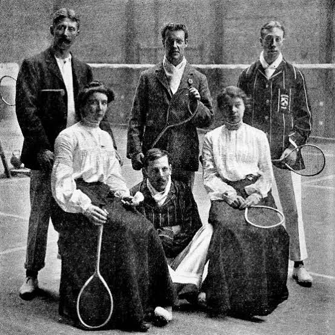

Badminton á sér langa og áhugaverða sögu. Íþróttin þróaðist úr eldri leikjum og varð smám saman að þeirri keppnisíþrótt sem við þekkjum í dag.

Badmintonleikarar í byrjun 20. aldar.
Upphaf badmintons
Badminton á sér langa sögu og þróaðist út frá eldri
leikjum þar sem fólk sló léttan bolta eða fjaðrabolta
með spaða. Einn leikur sem tengist uppruna badmintons
er Poona, sem var spilaður á Indlandi á 19. öld.
Breskir hermenn sem voru staddir á Indlandi kynntust
leiknum og tóku hann með sér til Bretlands. Þar varð
hann smám saman vinsælli og reglur um íþróttina fóru
að þróast.
Badminton House
Nafnið badminton kemur frá Badminton House í
Gloucestershire á Englandi. Þar var leikurinn
stundaður á 19. öld og varð nafnið badminton smám
saman notað yfir íþróttina.
Eftir því sem badminton varð vinsælli fóru leikmenn
að þróa sameiginlegar reglur og íþróttin varð
skipulagðari.
Fyrstu reglurnar
Árið 1893 voru fyrstu formlegu reglurnar fyrir
badminton gefnar út í Englandi. Reglurnar hjálpuðu
til við að samræma hvernig leikurinn var spilaður
og hvernig keppnir fóru fram.
Árið 1934 var International Badminton Federation
stofnað. Sambandið varð síðar þekkt sem Badminton
World Federation, eða BWF.
Badminton á Ólympíuleikunum
Badminton kom fyrst fram sem sýningargrein á
Ólympíuleikunum í München árið 1972. Íþróttin
varð aftur sýningargrein árið 1988 í Seoul.
Árið 1992 varð badminton svo fullgild
Ólympíuíþrótt á Ólympíuleikunum í Barcelona.
Síðan þá hefur badminton verið fastur hluti af
Ólympíuleikunum.
Keppt er í einliðaleik karla og kvenna,
tvíliðaleik karla og kvenna og tvenndarleik.
Badminton í dag
Í dag er badminton spilað um allan heim og er
sérstaklega vinsælt í mörgum löndum í Asíu og
Evrópu.
Lönd eins og Kína, Indónesía, Japan, Suður-Kórea,
Danmörk og Malasía hafa átt marga af bestu
badmintonleikurum heims.
Íþróttin hefur einnig þróast mikið. Búnaðurinn
hefur orðið léttari og sterkari og leikmenn hafa
orðið hraðari og tæknilega betri.
Sagan í stuttu máli
Á 19. öld var Poona spiluð á Indlandi.
Breskir hermenn kynntust leiknum á Indlandi.
Leikurinn varð vinsæll í Bretlandi.
Árið 1893 voru fyrstu formlegu reglurnar gefnar út.
Árið 1934 var alþjóðlegt badmintonsamband stofnað.
Árið 1972 varð badminton sýningargrein á Ólympíuleikunum.